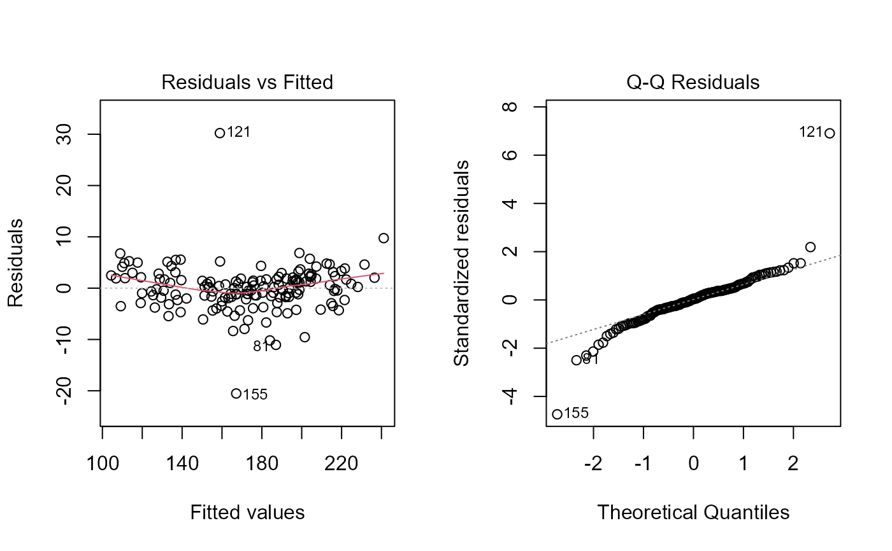

![[Stable]](figures/lifecycle-stable.svg)
path_coeff()computes a path analysis using a data frame as input data.path_coeff_seq()computes a sequential path analysis using primary and secondary traits.path_coeff_mat()computes a path analysis using correlation matrices as input data.
Usage
path_coeff(
.data,
resp,
pred = everything(),
by = NULL,
exclude = FALSE,
correction = NULL,
knumber = 50,
brutstep = FALSE,
maxvif = 10,
missingval = "pairwise.complete.obs",
plot_res = FALSE,
verbose = TRUE,
...
)
path_coeff_mat(cor_mat, resp, correction = NULL, knumber = 50, verbose = TRUE)
path_coeff_seq(.data, resp, chain_1, chain_2, by = NULL, verbose = TRUE, ...)Arguments
- .data
The data. Must be a data frame or a grouped data passed from
dplyr::group_by()- resp
<
tidy-select> The dependent trait.- pred
<
tidy-select> The predictor traits. set toeverything(), i.e., the predictor traits are all the numeric traits in the data except that inresp. To select multiple traits, use a comma-separated vector of names, (e.g.,pred = c(V1, V2, V2)), an interval of trait names, (e.g.,pred = c(V1:V3)), or even a select helper (e.g.,pred = starts_with("V")).- by
One variable (factor) to compute the function by. It is a shortcut to
dplyr::group_by(). To compute the statistics by more than one grouping variable use that function.- exclude
Logical argument, set to false. If
exclude = TRUE, then the traits inpredare deleted from the data, and the analysis will use as predictor those that remained, except that inresp.- correction
Set to
NULL. A correction value (k) that will be added into the diagonal elements of the X'X matrix aiming at reducing the harmful problems of the multicollinearity in path analysis (Olivoto et al., 2017)- knumber
When
correction = NULL, a plot showing the values of direct effects in a set of different k values (0-1) is produced.knumberis the number of k values used in the range of 0 to 1.- brutstep
Logical argument, set to
FALSE. If true, then an algorithm will select a subset of variables with minimal multicollinearity and fit a set of possible models. See the Details section for more information.- maxvif
The maximum value for the Variance Inflation Factor (cut point) that will be accepted. See the Details section for more information.
- missingval
How to deal with missing values. For more information, please see
stats::cor().- plot_res
If
TRUE, create a scatter plot of residual against predicted value and a normal Q-Q plot.- verbose
If
verbose = TRUEthen some results are shown in the console.- ...
Depends on the function used:
For
path_coeff()additional arguments passed on tostats::plot.lm().For
path_coeff_seq()additional arguments passed on to path_coeff.
- cor_mat
Matrix of correlations containing both dependent and independent traits.
- chain_1, chain_2
<
tidy-select> The traits used in the first (primary) and second (secondary) chain.
Value
Depends on the function used:
path_coeff(), returns a list with the following items:Corr.x A correlation matrix between the predictor variables.
Corr.y A vector of correlations between each predictor variable with the dependent variable.
Coefficients The path coefficients. Direct effects are the diagonal elements, and the indirect effects those in the off-diagonal elements (lines).
Eigen Eigenvectors and eigenvalues of the
Corr.x.VIF The Variance Inflation Factors.
plot A ggplot2-based graphic showing the direct effects in 21 different k values.
Predictors The predictor variables used in the model.
CN The Condition Number, i.e., the ratio between the highest and lowest eigenvalue.
Det The matrix determinant of the
Corr.x..R2 The coefficient of determination of the model.
Residual The residual effect of the model.
Response The response variable.
weightvar The order of the predictor variables with the highest weight (highest eigenvector) in the lowest eigenvalue.
path_coeff_seq()returns a list with the following objectsresp_fc an object of class
path_coeffwith the results for the analysis with dependent trait and first chain predictors.resp_sc an object of class
path_coeffwith the results for the analysis with dependent trait and second chain predictors.resp_sc2 The path coefficients of second chain predictors and the dependent trait through the first chain predictors
fc_sc_list A list of objects with the path analysis using each trait in the first chain as dependent and second chain as predictors.
fc_sc_coef The coefficients between first- and second-chain traits.
cor_mat A correlation matrix between the analyzed traits. If
.datais a grouped data passed fromdplyr::group_by()then the results will be returned into a list-column of data frames.
Details
In path_coeff(), when brutstep = TRUE, an algorithm to
select a set of predictors with minimal multicollinearity and high
explanatory power is implemented. first, the algorithm will select a set of
predictors with minimal multicollinearity. The selection is based on the
variance inflation factor (VIF). An iterative process is performed until
the maximum VIF observed is less than maxvif. The variables selected
in this iterative process are then used in a series of stepwise-based
regressions. The first model is fitted and p-1 predictor variables are
retained (p is the number of variables selected in the iterative process.
The second model adjusts a regression considering p-2 selected variables,
and so on until the last model, which considers only two variables. Three
objects are created. Summary, with the process summary,
Models, containing the aforementioned values for all the adjusted
models; and Selectedpred, a vector with the name of the selected
variables in the iterative process.
References
Olivoto, T., V.Q. Souza, M. Nardino, I.R. Carvalho, M. Ferrari, A.J. Pelegrin, V.J. Szareski, and D. Schmidt. 2017. Multicollinearity in path analysis: a simple method to reduce its effects. Agron. J. 109:131-142. doi:10.2134/agronj2016.04.0196
Olivoto, T., M. Nardino, I.R. Carvalho, D.N. Follmann, M. Ferrari, et al. 2017. REML/BLUP and sequential path analysis in estimating genotypic values and interrelationships among simple maize grain yield-related traits. Genet. Mol. Res. 16(1): gmr16019525. doi:10.4238/gmr16019525
Author
Tiago Olivoto tiagoolivoto@gmail.com
Examples
library(metan)
# Using KW as the response variable and all other ones as predictors
pcoeff <- path_coeff(data_ge2, resp = KW)
#> Severe multicollinearity.
#> Condition Number: 7865.84
#> Consider using a correction factor with 'correction' argument.
#> Consider identifying collinear traits with `non_collinear_vars()`
# The same as above, but using the correlation matrix
cor_mat <- cor(data_ge2 %>% select_numeric_cols())
pcoeff2 <- path_coeff_mat(cor_mat, resp = KW)
#> Severe multicollinearity.
#> Condition Number = 7865.84
#> Please, consider using a correction factor, or use 'brutstep = TRUE'.
# Declaring the predictors
# Create a residual plot with 'plot_res = TRUE'
pcoeff3<- path_coeff(data_ge2,
resp = KW,
pred = c(PH, EH, NKE, TKW),
plot_res = TRUE)

#> Weak multicollinearity.
#> Condition Number: 40.232
#> You will probably have path coefficients close to being unbiased.
# sequential path analysis
# KW as dependent trait
# NKE and TKW as primary predictors
# PH, EH, EP, and EL as secondary traits
pcoeff4 <-
path_coeff_seq(data_ge2,
resp = KW,
chain_1 = c(NKE, TKW),
chain_2 = c(PH, EH, EP, EL))
#> ========================================================
#> Collinearity diagnosis of first chain predictors
#> ========================================================
#> Weak multicollinearity.
#> Condition Number: 1.139
#> You will probably have path coefficients close to being unbiased.
#> ========================================================
#> Collinearity diagnosis of second chain predictors
#> ========================================================
#> Severe multicollinearity.
#> Condition Number: 1047.993
#> Consider using a correction factor with 'correction' argument.
#> Consider identifying collinear traits with `non_collinear_vars()`
pcoeff4$resp_sc$Coefficients
#> PH EH EP EL linear
#> PH 1.4800514 -1.3237892 0.4282428 0.1689388 0.7534439
#> EH 1.3791537 -1.4206365 0.5832858 0.1611440 0.7029469
#> EP 0.9448831 -1.2353087 0.6707935 0.1170515 0.4974193
#> EL 0.5627096 -0.5151991 0.1767029 0.4443467 0.6685601
pcoeff4$resp_sc2
#> trait effect NKE TKW residual total
#> 1 PH direct 1.45585270 -0.07780424 -0.102002953 1.4800514
#> 2 PH indirect_EH -1.70571124 0.54287910 0.160957033 -1.3237892
#> 3 PH indirect_EP 0.48951552 -0.12747469 -0.066202002 0.4282428
#> 4 PH indirect_EL 0.09405361 0.07201754 -0.002867693 0.1689388
#> 5 PH total 0.33371058 0.40961771 -0.010115614 0.7534439
#> 6 EH direct -1.83049968 0.58259569 0.172732518 -1.4206365
#> 7 EH indirect_PH 1.35660461 -0.07250018 -0.095049229 1.3791537
#> 8 EH indirect_EP 0.66674189 -0.17362620 -0.090170068 0.5832858
#> 9 EH indirect_EL 0.08971396 0.06869464 -0.002735378 0.1611440
#> 10 EH total 0.28256079 0.40516395 -0.015222157 0.7029469
#> 11 EP direct 0.76677015 -0.19967455 -0.103697874 0.6707935
#> 12 EP indirect_PH 0.92943432 -0.04967118 -0.065119943 0.9448831
#> 13 EP indirect_EH -1.59170362 0.50659374 0.150198865 -1.2353087
#> 14 EP indirect_EL 0.06516626 0.04989828 -0.001986918 0.1170515
#> 15 EP total 0.16966711 0.30714629 -0.020605871 0.4974193
#> 16 EL direct 0.24738189 0.18942212 -0.007542670 0.4443467
#> 17 EL indirect_PH 0.55350939 -0.02958086 -0.038781116 0.5627096
#> 18 EL indirect_EH -0.66383754 0.21128050 0.062642093 -0.5151991
#> 19 EL indirect_EP 0.20198546 -0.05259902 -0.027316482 0.1767029
#> 20 EL total 0.33903919 0.31852275 -0.010998175 0.6685601